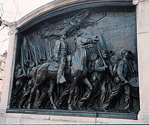
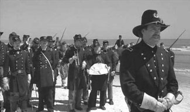

|
As an accurate historical portrayal of the Fifty-fourth
Massachusetts Regiment, Glory is way off the mark.
However, the filmmakers did not intend to produce a
documentary of the regiment. Their aim was to provide a
dramatic interpretation of the significant role African
Americans played in the Civil War; they were successful in
realizing that objective. Glory is a powerful,
engaging war movie that employs the combat film framework to
tell a story of courage and valor. In making the white
regimental leader, Colonel Robert Gould Shaw, the focal
point of the film, the filmmakers demonstrated that they are
complicit with the rest of Hollywood in the way black
subjects are represented in film. Ultimately, the greatest
contribution of Glory was to stimulate tremendous
interest in this important chapter in U.S. history. With
broad distribution, the film continues to provoke new ways
of thinking about the role of African Americans in our
nation's past.
Glory, released in 1989 by Tri-Star Pictures, was
produced by Freddie Fields and directed by Ed Zwick from a
screenplay by Kevin Jarre. Zwick's credits include the
television series thirtysomething and the films
About Last Night..., Courage under Fire, and The
Siege. Matthew Broderick portrayed Colonel Shaw, the
narrator and chief protagonist of the film. An excellent
group of actors portrayed a fictionalized ensemble of black
soldiers of the Fifty-fourth, including Denzel Washington as
the embittered ex-slave Trip; Morgan Freeman as the
Southerner Rawlins, a gravedigger who eventually becomes the
regiment's sergeant major; Andre Braugher as Shaw's educated
Beacon Hill friend Searles; and Jihmi Kennedy as the
uneducated Sharts from South Carolina. Washington's gripping
portrayal earned him an Academy Award for Best Supporting
Actor and turned out to be a breakthrough performance for
him. He subsequently worked with Zwick in Courage under
Fire and The Siege. Glory also received Academy
Awards for Best Cinematography and Best Sound. Director of
Photography Freddie Francis achieved great success in
shooting the film's remarkably authentic battle scenes. The
soundtrack by James Horner featured a haunting theme and the
voices of the Harlem Boys' Choir.
The opening scene of the film is at Antietam Creek,
Maryland, in 1862. Wounded during the battle, Shaw hears in
a field hospital that Lincoln is about to free the slaves.
Later, at home in Boston at a Beacon Hill reception,
Massachusetts governor John Andrew, an abolitionist and a
friend of Shaw's parents, introduces Shaw to the
abolitionist Frederick Douglass. Andrew asks Shaw to head a
black regiment, and after a brief period of reflection he
accepts. The scene then shifts to training camp in
Readville, Massachusetts, where Shaw recruits a tough Irish
drill sergeant, Mulcahy, to train and discipline the men.
Shaw orders that Trip be publicly flogged for an
unauthorized departure from camp even though he was on a
search for shoes for himself. Subsequently, upon the advice
of Rawlins, the colonel forces the local quartermaster to
release shoes for all the men. On payday Shaw joins his men
in refusing to accept any pay because the government has
paid the black troops less than the white troops.
After long-awaited uniforms arrive, the regiment marches
out of Boston in spring 1863 to its first assignment south
in Beaufort, South Carolina. There is little action, and it
becomes clear that the regiment is to be confined to service
as a labor force. The regiment's first engagement is the
sacking and burning of Darien, Georgia, under the command of
James Montgomery. Horrified by this action, Shaw confronts
his commanding officer with irregularities and succeeds in
securing a transfer. At James Island, the regiment repels a
Confederate force. Union commanders decide to attack Battery
Wagner outside of Charleston, South Carolina. Shaw
volunteers to lead the charge despite his men's exhaustion
and the suicidal nature of the assault. On July 18, 1863,
the Fifty-fourth manages to breach the parapets of the
Confederate stronghold briefly but then is repulsed in
fierce fighting with heavy casualties. The Confederates bury
the fallen Shaw with his men in a mass grave. A closing
graphic states: "The Massachusetts 54th lost over half of
its number in the assault on Fort Wagner. The supporting
white brigades also suffered heavily before withdrawing. The
fort was never taken. As word of their bravery spread,
Congress finally authorized the raising of black troops
throughout the Union. Over 180,000 volunteered. President
Lincoln credited these men of color with helping turn the
tide of the war." The movie credits roll with varied still
shots of the Shaw Fifty-fourth Massachusetts Monument on the
screen.
Origins and Development of the Movie
How did Hollywood come to make the movie Glory?
There are differing accounts. According to an article in
Civil War Times Illustrated, in 1985 prolific movie
producer Freddie Fields, who had previously produced
Looking for Mr. Goodbar, The Year of Living
Dangerously, and American Gigolo, and
screenwriter Kevin Jarre, whose credits include Rambo
II, were in Boston on business. As they walked through
Boston Common and up the granite steps leading to Beacon
Street, the article reports, their attention was caught by
the breathtaking sight of the Saint-Gaudens monument. "We
both felt the same thing," said Fields. "Perhaps there was a
|

The Saint-Gaudens memorial to
Robert Gould Shaw and the Massachusetts 54th that
inspired Glory.
|
movie here. The monument was impressive." "We researched
Shaw and the 54th Massachusetts and found this wonderful,
unknown story of the Civil War." From that point on, Fields
related, getting the movie made became a "four-year
passion." He characterized the story of Glory as a
"major moment of African-American heritage, unknown,
overlooked or suppressed in history ... a story of American
heroism, of black and white men brought together in a common
objective." One of the books he says the film was based on,
Peter Burchard's One Gallant Rush, was published in
1965, so the history had hardly been suppressed. He is
perhaps considering the story's absence from American
popular culture to be suppression. The film credits
acknowledge that the movie was based on Burchard's book,
Lincoln Kirstein's volume on the monument, and the letters
of Robert Gould Shaw. The movie opens with these lines:
"Robert Gould Shaw, the son of wealthy Boston abolitionists,
was 23 years old when he enlisted to fight in the War
between the States. He wrote home regularly telling his
parents of life in the gathering Army of the Potomac. These
letters are collected in the Houghton Library of Harvard
University." Kirstein received assistance by way of
corroboration and help with a number of details from
Burchard. According to Peter Burchard, after the release of
Glory Leslie Katz, Kirstein's editor, told Burchard
that Kirstein had hired Kevin Jarre to write the script in
an effort to see to it that a major motion picture about
Shaw would be written and produced. According to the movie's
press guide, several years prior to the movie's release in
1989, Jarre met Kirstein, who inspired him to write the
script. Moved by Kirstein, the founder and general director
of the New York City Ballet, who had known some of Shaw's
family as a youth, Jarre wrote the initial screenplay in a
few weeks. in 1985 Fields acquired rights to the film and,
after a few unsuccessful efforts, managed to convince
Tri-Star Pictures to take on Glory.
Once the draft screenplay was in Fields's hands,
Glory underwent an extensive development process
driven by Fields and Zwick. Leslie Katz reported to Peter
Burchard, who was uncertain as to the accuracy of these
comments, that Kirstein was not "paid a cent for his
contribution to the making of the movie" and did not like
the final product. It is difficult to determine Kirstein's
precise role and final assessment of the film. It is clear,
however, from an examination of two draft scripts and the
final film, that extensive reorganization and rewriting took
place, as occurs with most Hollywood products. It is
interesting that Burchard found out about the movie only
after filming was under way and made his discovery via an
article in the New York Times. At any rate, Burchard
did connect with Fields and provided extensive comments on
the first script, authored solely by Jarre. His input
greatly improved the final product. Burchard also composed a
piece for the Tri-Star press kit. In return for his
contributions, the filmmakers generously allowed the imagery
of the movie to adorn the paperback reissue of Burchard's
book.
It is informative to compare the Jarre script, the later
rewrite, and the final product. Early in the Jarre script
there is an absurd scene with what Burchard calls
"preposterous dialogue" where in Harvard Yard Shaw confronts
two Southerners, fellow Harvard men, who have their black
slaves in tow. It was Burchard's influence, it seems, that
was responsible for the omission of this entire scene. Jarre
places John Brown in a confrontation with Shaw over the
depth of his abolitionist convictions at an early 1860s
Beacon Hill party. The martyr Brown, of course, had been
executed in December 1859. Once again, Burchard was able to
sway the filmmakers, and all references to Brown were
deleted. In dramatizing the creation of the unit, the movie
creates a distortion that truly minimizes the magnitude of
the regiment's achievement. Rather than forming in the fall
and winter of 1862, as the movie portrays, it was not until
February 1863 that the effort really got going, and the
majority of the men did not arrive in camp until late April
1863. Since they left for South Carolina on May 28, at best
the men had less than two months to train. In shorter time
than any other Union regiment, the unit was created and
trained to the army's highest standards. In distorting the
time frame to advance the story line, the film grossly
underplays what the men of the unit achieved in a remarkably
brief period of time. Jarre wrote the script scorning the
most elementary study of chronology, and later rewrites
retained the narrative error about the period of training.
Cut out of Jarre's script was a ridiculous scene of Shaw
with a camp prostitute in Massachusetts and also a
relationship between Shaw and the black Charlotte Forten, an
actual historical figure who came from the North to teach
freed slaves. (To be fair, there is some basis for
speculating about a relationship between Shaw and Forten,
since she was quite taken with him. However, his recent
marriage and the propriety of the times in all likelihood
would have precluded such a liaison.) Jarre's script
included an unnecessarily heavy-handed scene of Shaw in the
Union Army participating in the return of fugitive slaves.
Presumably Jarre felt that this scene would provide viewers
with a motive for Shaw's later commitment to the
Fifty-fourth. Fortunately, this bit of inaccuracy also did
not make it to the final product. Shaw's family had
impeccable abolitionist credentials; his depth of commitment
did not match that of his parents but was strong
nonetheless. Shaw's mother, who exerted great influence on
him, at first had been given a significant role in the
script; rewriting led to her virtual disappearance. Whatever
the significance of losing the talents of Jane Alexander,
who played Sarah Shaw, the overall decision to focus the
film on Shaw and the Fifty-fourth was a good one. The
rewrite of the Jarre script gets to the war much more
quickly and the final film even more rapidly.
Overall, the revision process made Glory
essentially a war movie that also to a certain extent
highlighted the problem of racism in nineteenth-century
America. This shift accelerated the narrative pace of the
movie and emphasized the elaborate battle scenes, which the
Glory team excelled in producing. It also made
Glory less a film about Robert Gould Shaw and more a
film about all of the men of the Fifty-fourth Massachusetts.
Is Glory Good History?
In many respects, the film is a poor reflection of the
history of the regiment and its context. Where the
filmmakers are most open to criticism is their choice to
make Shaw, the white commanding officer, the hero of the
film. In their depiction, Shaw takes only a few moments to
decide to accept Governor Andrew's offer to command the
regiment; in reality, reaching his decision was a lengthier
and more complex process. It is a typical Hollywood approach
to choose a white hero when making films whose ostensible
subject matter is people of color. The film Missing
was a taut, compelling drama that exposed the brutality of
the Pinochet regime in Chile and the U.S. complicity with
the official state violence. However, the two stars, who
give outstanding performances, are both white (Jack Lemmon
and Sissy Spacek). No Chilean is given a substantial part to
play. A dramatic film about Steve Biko, the South African
martyr, portrays white South Africans as its central
protagonists. Ghosts of Mississippi, a film that
focuses on the murdered civil rights leader Medgar Evers,
highlights the white prosecutor who eventually brought
Evers's murderer to justice; James Woods's portrayal of the
Klan murderer is by far the most compelling part of the
film. Mississippi Burning, whose subject is the
murder of black and white civil rights workers James Chaney,
Andrew Goodman, and Michael Schwerner, stars white FBI
investigators. And the litany could go on and on. What are
we to make of this pattern? For one thing, the people who
produce Hollywood movies are part of the entertainment
industry, which wishes to create a product that sells. Films
that feature stories about whites and star whites typically
sell better than films such as Malcolm X, by Spike
Lee, an exception that proves the rule. Thus, in some
respects the Hollywood industry is racist, which should not
seem surprising, given the pervasive racism in the overall
American culture. As historian Patricia Turner declared,
"It's hard to think of a single, successful commercial film
in which a black hero is allowed to be the successful agent
of change in any aspect of the oppression of his or her
people."
Closely related to the decision to make Shaw the hero and
focal point of the film as narrator and central protagonist
is how the filmmakers chose to represent the black enlisted
men of the Fifty-fourth. Turner noted, "To use the
much-quoted but very appropriate adage coined by Ralph
Ellison, the real men of the 54th are invisible in this
film." Director Zwick oddly characterized the film as
faithful to the regiment's history: "So often history has to
be in some ways manhandled or perverted so as to serve
dramatic truths. And here was a story which unto itself,
literally, with its beginning, middle and end, told a
complete story and one that was utterly compelling. Ample
evidence was available to the filmmakers to remain faithful
to the historical record, but instead they chose to create a
composite group of fictional characters. The four black
soldiers featured in Glory experience the male
bonding of training and bloody combat often played out in
Hollywood war films. However, the historical truth might
well have proved to be much more interesting. Frederick
Douglass's two sons both served in the Union Army; Lewis
Douglass, who actually served as sergeant major in the
Fifty-fourth and whose letters are extant, fought in and
survived the battle of Battery Wagner. William H. Carney,
another member of the regiment, received the Congressional
Medal of Honor, the first black to receive it, for his valor
in rescuing the national flag despite the multiple wounds he
sustained.
There is no question that the actors in Glory were
sensitive to these criticisms. Denzel Washington recalled
that during production, "I did express my concern to Ed
[Zwick] and Freddie [Fields] that the movie not be about
whites, and I think the script reflects this. Morgan Freeman
replied to critic Roger Ebert's charge that the movie
focused too much on the white point of view:
I don't have a problem with that. He [screenwriter Kevin
Jarre] wrote it from a place he could write a story from,
the only place he could get a grip on it from. You cannot
reasonably ask a white writer to do it differently. Now, if
we're going to start citing some unfortunates, it might be
unfortunate that a black writer didn't write it, but if a
black writer had written it, there's a good chance he
wouldn't have found a producer. So there you are. This is a
movie that did get made, and a story that did get told, and
that's what is important.
Historian Barbara Fields deplored the conversion of the
regiment from one consisting of free men into one of
fugitive slaves. Had Lewis Douglass been included as a
character, his very presence would have "blasted the fiction
of the fugitive slave regiment as an illiterate,
inarticulate, and politically naive group of enlisted men."
If there was one thing that the movie could not encompass,
it was a substantial African American male figure, "who from
the very outset could stand up and speak for himself."
Asa Gordon of the Douglass Institute of Government noted:
"I have attended several screenings of Glory in the
presence of black youths and adults who clearly absorbed the
film's negative messages devaluing education as a means to
improve the status of African Americans in society. He
reported that he had heard some black youths use the term
snowflake, with which Trip taunted Searles, as a way to
demean fellow blacks interested in intellectual pursuits.
Glory not only ignores the actual individual
enlisted men of the regiment but also creates a misleading
impression of its makeup. Three of the four fictional
soldiers highlighted in the film are former slaves from the
South; in fact, four-fifths of the Fifty-fourth
Massachusetts were Northerners who had been free throughout
their lives. The film turns its back on the vitally
important communities of African Americans in the
non-slaveholding states. It demeans the only black Bostonian
in the ensemble, Searles, as pathetically effete and
incompetent.
Glory can easily mislead viewers into thinking
that the Fifty-fourth Massachusetts was the first group of
blacks to fight in the Union Army, when in fact that
distinction belongs to two other groups, the First South
Carolina Volunteers, organized in 1862 and commanded by
Boston abolitionist Thomas Wentworth Higginson, and the
Louisiana Native Guard. Barbara Fields asserted that one
fact stands out in the history of the Civil War and is
clearly demonstrated in Higginson's history of his regiment:
"It was the clear-mindedness with which slaves understood
the political dynamics of the war, far ahead, I may say, of
Abraham Lincoln and most of the politicians."
Another deplorable aspect of the history depicted in
Glory is the virtual absence of Frederick Douglass,
the extraordinary abolitionist leader who served as a major
recruiter for the regiment and whose son was an important
combatant in the Fifty-fourth. In the little that we do see
of Douglass, he is depicted as an older man who has
virtually nothing to say. In fact, at the time that the
recruitment was being organized, Douglass, a riveting
orator, was a vigorous organizer in the prime of his life.
For him, according to David Blight, the black soldier was
"the principal symbol of an apocalyptic war, liberating
warriors who alone made suffering meaningful, a physical
force that gave reality to millennial hopes." Blight
wondered how the makers of the film could have missed the
possibilities offered by a scene of Douglass addressing
black recruits. Imagine, Blight wryly commented, "the use of
less apocalyptic music and more of Douglass's apocalyptic
voice." There was indeed a recruitment scene depicting
Douglass addressing a group of young black men in Syracuse,
New York, that was shot for the film but omitted in the
editing process. The scene is included in the video The
True Story of Continues, a documentary companion to
Glory that is addressed later in this essay.
One of the most dramatic scenes in the entire film is the
whipping of Trip after he has run away from camp in search
of shoes. However, historian Joseph T. Glatthar, whose
overall view of Glory is positive, called the
flogging of Trip "wholly inaccurate." It was the most
disturbing scene in the movie, Glatthar maintained.
"Congress outlawed whipping [in the military] in 1861. The
soldier did not desert--he was absent without leave, which
was the most common offense. He would have been entitled to
a hearing, and the chances are that the most punishment he
would have received would have been a month without pay or
confinement." Glatthar documented several instances in other
black regiments of black soldiers rebelling against
mistreatment, rebellions that led to charges of mutiny and
to execution. But this scene with Trip constituted a gross
distortion.
A glaring omission from Glory that serves to
decontextualize the history in the film is the absence of
any discussion of the draft riots in New York City, which
occurred just before the attack on Battery Wagner. Shaw's
mother and sisters were forced to flee their Staten Island
|

The 54th prepares for its
attack on Fort Wagner, as presented in
Glory.
|
home, and the nephew of one of the black men in the regiment
was killed by rioters. If the filmmakers had been
interested, they could have introduced this sobering
historical note. The fact that the film glibly depicts white
Union troops who had scuffled with the black Fifty-fourth
earlier in the drama cheering them on as they march to their
destiny on the beach at South Carolina only makes the
problem of racism and the history of the unit more
problematic.
Glory leaves the viewer with the distinct,
visceral impression that the entire black regiment was wiped
out at Battery Wagner. As many studies demonstrate, that is
completely inaccurate: the Fifty-fourth fought on until the
end of the Civil War. Further, the movie's closing graphic
misleadingly states that the fort remained in Confederate
hands, whereas the Union siege eventually led to its
evacuation in September 1863. Ironically, however, the
evacuation of Charleston, in which "elements of the
Fifty-fourth and Fifty-fifth, another black regiment, were
among those who marched triumphant into the city," did not
result from the fall of Wagner but rather from Sherman's
triumphant march from the west.
The Strengths of Glory
With all of its historical limitations, Glory's
great strengths make it a significant contribution to
American culture and its ongoing conversation over race.
New York Times film critic Elvis Mitchell concluded
that "what we have to look at is that Glory started a
conversation and provokes discussion, which is part of the
duty of art." He characterized the film as a "good movie
about a great subject," which transported and moved viewers
in fundamental ways. The ensemble of black actors, Mitchell
asserted, was outstanding. "I saw it with a group of kids
from Los Angeles. You could feel--you could taste the
excitement in the room, and that's when we have got to
realize the power of movies."
Glory is a powerful, dramatic film that makes a
very important point: blacks fought in the Union Army and
played a pivotal role in the central event in U.S. history.
They proved their manhood and demonstrated by their
willingness to fight and die with valor that they were an
integral part of America. This film reveals in a manner no
viewer can mistake or overlook that blacks fought for their
freedom in the Civil War. African Americans did not have
freedom bestowed upon them but rather won it on the
battlefield and on the stage of history. Glory makes
these basic historical insights palpable. In response to
historical criticisms, producer Fields declared that the
filmmakers had a challenging objective: "to make an
entertaining film first. Social messages and history can be
very boring, but if you put them in an entertaining film,
people will learn some history and take away a message." He
argued that "you can get bogged down when dealing in
history. Our objective was to make a highly entertaining and
exciting war movie filled with action and character." Judged
by the criteria that Fields identifies, the film must be
termed a success.
Glory makes a significant contribution to popular
understanding of the African American role in the Civil War.
Edward Linenthal eloquently stated this case, reprising some
of Morgan Freeman's comments cited earlier:
We cannot bemoan the historical literacy of Americans and
then complain too bitterly when Hollywood takes a daring
step for Hollywood and produces a film that has without any
question sparked in the American mind interest in this
story. How many people went to Glory without ever
knowing that blacks fought for the Union in the Civil War?
And even though Frederick Douglass was flattened, and even
though they were not [depicted as] free people of color,
this story provided a spark in the minds of young and old to
make them go and read, to learn about this, to begin--and
whose responsibility is it to teach them about this? It's
our job as historians to deepen and add complexity to the
story. This is what public history is about and it is our
responsibility to do so. Hollywood has its limitations, and
films, like every other kind of memorial work, which
Glory was, remember and forget, the same way that
historians or monuments remember and forget.
James M. McPherson asked, "Can movies teach history?" For
Glory, he replied, the answer is yes. "Not only is it
the first feature film to treat the role of black soldiers
in the American Civil War, but it is also one of the most
powerful and historically accurate movies ever made about
that war." McPherson acknowledged that the film is not
accurate in its portrayal of the history of the
Fifty-fourth, but the filmmakers, he contended, chose to
tell a story "not simply about the Fifty-fourth
Massachusetts but about blacks in the Civil War." The movie
in some ways is really not about the Fifty-fourth but rather
is a metaphor for the black experience in the war. Indeed,
the film quite openly and directly confronts the problem of
racism in American culture by characterizing many Union Army
commanders as deeply prejudiced. If the actual historical
players were much more racist than the movie communicated,
the fact that the topic was engaged seriously at all is
worth applauding. Associate Producer Ray Herbeck asserted
that the point of Glory was to characterize the
phenomenon of the U.S. Colored Troops, a majority of whom
were former slaves. From McPherson's viewpoint, with this
goal as their objective, they succeeded admirably.
Other historians have praised the film while
simultaneously offering critical comments. David Blight
called Glory a "war movie, a Civil War platoon drama
that follows certain predictable formulas. But it is also a
war movie that says that sometimes wars have meanings that
we are obligated to discern." However haltingly or
sketchily, it was at least an "initial Hollywood attempt to
confront some central questions of African-American history:
why did it take total war on such a scale to begin to make
black people free in America? Or, why did black men in the
middle of the nineteenth century have to die in battle, by
the thousands, in order to be recognized as men?" If
Glory did not do much to answer these questions, most
voices in American cultural life do not even begin to
discuss these difficult issues. Despite valid scholarly
criticisms, wrote William S. McFeely the film is certainly a
celebration of involvement and valor and, as such, should be
viewed positively.
In the closing credits of the film, the producers extend
special thanks to historian Shelby Foote, who served as a
consultant during production. He considered the battle
details especially praiseworthy. Peter Burchard raised the
interesting point that Foote may have been featured as a
historical consultant in order to highlight a Southerner as
the filmmakers sought support nationwide for the film--even
though Foote's expertise in African American history is not
distinguished.
Foote's comment pinpoints a great strength of the film:
the authenticity with which Glory depicts battle
scenes, whether it is the Fifty-fourth's first baptism of
fire at James Island, South Carolina, or their ill-fated
assault on Battery Wagner. These battle scenes seem
graphically and brutally true to life. In Glory,
Richard Bernstein wrote in the New York Times, war is
clearly hell. Producer Fields hired Ray Herbeck, himself a
reenactor, as associate producer and historical/technical
coordinator and gave him a substantial budget to ensure
authenticity. Herbeck commented in the New York Times
that this was "the first film to show the life of the common
Civil War soldier--white or black--in such detail."
Hollywood, he commented, does not often let "historically
minded people get involved to this extent." With the help of
many, Herbeck coordinated the development of a group of
black Civil War reenactors who appeared in the filM. The
film credits declared: "The producers gratefully acknowledge
the invaluable contribution of the thousands of living
history reenactors from 20 states whose donation of time,
equipment, and Civil War combat experience made this film
possible."
The Impact of Glory
According to Ray Herbeck, the film cost approximately $20
million to produce and took in roughly $35 million. To break
even, he argued, a film has to double its budget. However,
the film has proved quite successful in television
broadcasts and videocassette sales and rentals since its
release in 1989. It seems safe to speculate that the movie
was ultimately a profitable venture, although not what
Hollywood would consider a blockbuster.
Based on the continuing marketability of Glory,
Columbia Tri-Star has released it in digital video disc
(DVD) format. DVD has emerged as the fastest-growing format
ever and is regarded as the eventual replacement for the
videocassette. It should become the preeminent home viewing
product because of two unique features: high-quality
resolution and great capacity to store information. The
major film studios are producing selected backlist titles
and major new films in the DVD format. The DVD version of
Glory includes the film itself; interviews with Ed
Zwick, Morgan Freeman, and Matthew Broderick; a new
documentary entitled Voices of Glory; and a
previously produced documentary, The True Story of Glory
Continues. Voices of Glory, featuring historian James
Horton, focuses on the refusal of the men of the
Fifty-fourth to accept wages lower than those of white
soldiers and their eventual triumph on this issue.
The popular press considered the film a success.
Glory received some negative reviews, but the
positive assessments predominated. Vincent Canby in the
New York Times called Glory a "beautifully
acted, pageantlike" film. He made special note of the
climactic battle scene: "The attack on Fort Wagner, which is
the climax of the movie, comes as close to anything I've
ever seen on screen to capturing the chaos and brutality
that were particular to Civil War battles." Glory,
Canby concluded, is "celebratory, but it celebrates in a
manner that insists on acknowledging the sorrow. This is a
good, moving, complicated film." Although disturbed by some
of the film's shortcomings, David Nicholson, writing in the
Washington Post, called Glory "a long overdue
treatment of black participation in the Civil War," which
corrects the "omission of a significant chapter in American
history from popular culture." David Ansen, writing in
Newsweek, described Glory as a handsome,
intelligent movie that "demands attention: it opens our eyes
to a war within a war most of us never knew about." Richard
Schickel in Time was struck by the depictions of
battle: "Glory is at is best when it shows their
[referring to the men of the Fifty-fourth] proud embrace of
nineteenth-century warfare at its most brutal. Director
Edward Zwick graphically demonstrates the absurdity of lines
of soldiers slowly advancing across open ground, shoulder to
shoulder, in the face of withering rifle volleys and
horrendous cannonade. The fact that the Fifty-fourth finally
achieves respect (and opens the way for other black
soldiers) only by losing half its number in a foredoomed
assault on an impregnable fortress underscores this terrible
irony." Stanley Kauffmann in the New Republic saluted
Glory by noting that it was "not a mere exploitation
of a historical circumstance with modern relevance, not a
made-for-TV thesis tract" but rather an "authentic, patient,
bloody, and moving work." Writing in Commonweal, Tom
O'Brien characterized Glory as a "no-fuss example of
how to teach inclusive history and document a minority group
role in preserving America."
The film Glory has had a long-term, positive
impact, stimulating both the visibility of and interest in
the story of blacks in the Union Army. The influence has
been demonstrated in a variety of areas: historical
reenactment, public sculpture, genealogy, archives, books
and publications, curricula, films and videos, and public
programs.
Civil War historical reenactment dates back to the
nineteenth century and was an almost totally white
phenomenon until the making of Glory. William
Gwaltney of the National Park Service was one of the
organizers of Company B, Fifty-fourth Massachusetts
Regiment, for the movie. He recalled that when "we left the
film, it was not so much the movie that we were fixated on
but the history. And we had great feelings of pride in
having participated" in the making of Glory and
"redoubled our efforts to tell the story." The experience of
being part of the filmmaking, Gwaltney recounted, "gave the
men of Company B and other [black reenactors], the
opportunity to become involved in special events in museums,
education, in parades, special programs, in various
reenactments, changing the stakes in the hobby." Though the
"hobby" remains overwhelmingly white, a small but active
group of black reenactors clearly bring unique commitments
and a special energy to Civil War historical reenactment.
In the summer of 1998 in the Shaw neighborhood, a black
community in Washington, D.C., the African-American Civil
War Memorial Freedom Foundation, dedicated "Spirit of
Freedom," a new monument to the blacks who fought in the
Union Army. It features a "bronze statue of black soldiers
in front of three low semicircular granite walls covered
with stainless steel plaques listing ... all of the black
soldiers who served ... plus the 7,000 white officers they
served under." The project will eventually include a
heritage center adjacent to the memorial, which is intended
to complement the memorial with historical displays and
presentations. The central organizer of the project,
Washington, D.C., city councillor Frank Smith Jr., developed
an interest in the black soldiers who fought in the Union
Army while a young civil rights worker with the Student
Non-Violent Coordinating Committee in Mississippi during the
1960s. Inspired by the movie Glory, Smith engineered
passage of a local bill calling for the memorial in 1991 and
then succeeded in gaining congressional authorization for
the $2.5 Million project in 1992. Clearly, the 1989 release
of Glory proved immensely helpful in developing the
necessary political momentum for these actions.
As a direct result of the activities of the
African-American Civil War Memorial Freedom Foundation, Jean
Douglass Greene and Jeanette Braxton Secret established the
organization Descendants of African-American Union
Soldiers/Sailors and Their White Officers in the Civil War,
1861-1865. Greene is the great-granddaughter of Frederick
Douglass, and Secret is the great-granddaughter of Iverson
Granderson, who served in the Union Navy. The purpose of the
organization is to promote research and publications and to
honor and commemorate African Americans who served in the
Union military. Secret is the author of a guide on how to
conduct such research.
In September 1997 the National Gallery of Art in
Washington, D.C., placed on display in a beautifully
presented exhibit the restored plaster cast of the Shaw
Monument, on long-term loan from Saint-Gaudens National
Historic Site in Cornish, New Hampshire. The plaster cast
had remained outdoors for decades until the park decided in
1993 that they could no longer run the risk of continued
exposure to the elements and the ongoing deterioration of
this invaluable piece. The Saint-Gaudens Memorial Trustees,
in collaboration with the National Park Service, began a
fund-raising effort, which resulted in the restoration of
the plaster and the casting of a bronze replica for display
in Cornish. There can be little doubt that the 1989 release
of Glory provided significant impetus to these
efforts, which were primarily driven by the deterioration of
the plaster and the then upcoming centennial of the
monument's installation in Boston. Matthew Broderick, who
portrayed Shaw in the film, was featured at the National
Gallery opening.
Teachers across the country successfully utilize
Glory in their classrooms, and the film is also a
formal part of school curricula. Award-winning secondary
school teacher James Percoco of Fairfax County, Virginia,
shows Glory at the end of the Civil War unit in his
U.S. history class. For him the film is a powerful depiction
of a story that has long been overlooked in the classroom.
Before screening the film for students, Percoco summarizes
the historical inaccuracies and advises his students "that
this film is not a documentary, but rather a producer's or
director's interpretation of the past." The film leads to
"all kinds of wonderful discussions with students"
concerning why the filmmakers chose to omit Lewis Douglass,
why they depicted the men of the Fifty-fourth as largely
former slaves, and why filmmakers created a story that leads
to the false impression that Battery Wagner was the
regiment's only major engagement. In short, experience has
shown that Glory serves as an extremely effective
classroom tool. It is interesting to note that Percoco
utilizes the edited version created for the classroom
because his "school district has a policy against showing
films that are rated R.
"Utterly enveloped, inspired, and swept away" by
Glory, businessman/educator George Gonis in 1998
produced a dress-up cap that enables young people to imagine
themselves as the black and white brothers of the
Fifty-fourth. His firm Round Robin, which designs toys and
learning products and produces children;s literature,
includes the "CAPtive Readers" series, "a collection of
history-inspired headwear paired with oversized, laminated
bookmarks-each bookmark packed with factual information,
vintage photographs, colorful graphics, and a reading list
for three age groups." Gonis claims that the cap is "one of
the few non-book products available for kids that addresses
the evils of bigotry and the heroic struggle for abolition,
civil rights, and brotherhood." Winner of a Parents' Choice
award, the Fifty-fourth cap and bookmark have been extremely
well received.
The film also gave new life to another account of the
regiment and led to a modern edition of Shaw's letters.
Saint Martha's Press published Peter Burchard's excellent
book One Gallant Rush in 1965 and over the course of
a quarter-century sold between four and five thousand copies
of the book. Since the book was reissued in 1989 upon the
release of Glory, with the film depicted on the front
cover, more than fifty thousand copies have been sold. This
is perhaps one of the most dramatic demonstrations of how a
popular film can stimulate enormous interest in a serious
piece of historical work that had previously received little
exposure. In the preface to his edited collection of Robert
Gould Shaw's letters, Russell Duncan noted that in "the
book's earliest stage--two weeks after the premiere of the
movie Glory," the University of Georgia Press
"encouraged me to move quickly on the project. The film also
renewed interest in Luis E. Emilio's nineteenth-century
history of the regiment, sparking several reprint editions.
A survey of some of the institutions holding significant
archival materials relevant to Shaw and the Fifty-fourth
reveals that in all cases usage of the materials skyrocketed
after the release of Glory. In large part because of
Glory and, to some extent, the Ken Burns public
television series The Civil War, there was a significant
increase in the number of researchers examining materials
pertaining to African American troops at the National
Archives and Records Administration (NARA). Indeed, Budge
Weidman, project manager of the Civil War Conservation
Corps, reported that Shaw's military service record was so
frequently examined as a direct result of Glory that
it had to undergo conservation before it could be
microfilmed. Weidman's corps, composed of members of the
National Archives Volunteer Association, has undertaken the
massive project of preparing for microfilming approximately
two thousand boxes of records relating to the U.S. Colored
Troops. Weidman recounted that as a result of the film she
personally has fielded an increased number of calls about
the men of the U.S. Colored Troops, most of them from
descendants of African Americans who served in the Civil
War.
Glory also sparked the creation of two National
Park Service database projects connected with the
African-American Civil War Memorial Freedom Foundation. On
September 10, 1997, the Park Service announced the
completion of the first phase of the "Civil War Soldiers and
Sailors Names index" project and placed more than 235,000
African American Civil War servicemen's names on its Web
site. The Web site includes regimental histories of 180
African American Union regiments, with hyperlinks between
soldiers' names, the regiments they served in, and the
battles the regiments fought in. in addition, the National
Park Service, Howard University, and the Department of the
Navy have formed a partnership to compile the names of
African Americans who served in the Union Navy.
Susan Halpert of Houghton Library, Harvard University,
related that Glory, which included "strangely large
credits for Houghton at the beginning of the film," had a
major impact on her research facility. According to her
there were a huge number of requests to examine Shaw's
letters at the time of the movie's release in 1989. Another
peak occurred when the movie was released on the video
market. Every year since the film's release, Houghton staff
have noticed a strong interest in the Shaw letters. Requests
are made in person and often via phone or letter related to
History Day projects. History Day is a national competition,
sponsored by education groups, the National Park Service,
The History Channel, and many other groups, which has
stimulated the interest of young people in history. Often
screenings of Glory in schools will trigger a burst
of interest. The letters are now on microfilm, and inquirers
are frequently referred to Russell Duncan's book. Donald
Yacovone of the Massachusetts Historical Society reported
that since 1989 the society has witnessed a marked increase
in requests to examine its collection of Shaw letters and
the papers of Luis E. Emilio, whose book on the Fifty-fourth
remains the fullest treatment of the regiment.
To capitalize on Glory's success and, perhaps, to
compensate for the film's shortcomings as history, Tri-Star
Pictures issued a video, The True Story of Glory
Continues, narrated by Morgan Freeman. Ray Herbeck, who
wrote and produced the documentary, believed that it should
"enhance the experience of the feature film" and noted that
the two are marketed together, perhaps one of the first
times a studio has employed this marketing approach. Several
of Lewis Douglass's letters are quoted. The documentary
treats the history of the Fifty-fourth after the assault on
Battery Wagner; includes a scene dropped from Glory
where, at a recruitment rally, Frederick Douglass exhorts
young black men to enlist; and features many images and the
names of several enlisted men of the regiment. The
documentary addresses the financial hardships on the home
front that arose because of the men's refusal to accept
unequal pay. The work also focuses on the black reenactors
and their efforts to educate Americans about this important
chapter of American history. Overall, the documentary
effectively employs illustrations, photos, and dramatic
footage.
Sparked by the film Glory, Judy Crichton,
executive producer of public television's American
Experience, developed a documentary on the Fifty-fourth.
The Massachusetts 54th Colored Infantry, produced by
Jackie Shearer, who worked on the civil rights documentary
series Eyes on the Prize, and Laurie Kahn-Leavitt,
once again was narrated by Mongan Freeman. This documentary,
a conscious and successful attempt to correct the history
that Glory portrayed, serves to set the regiment in
its proper historical context. In his scripted introduction,
series host David McCullough carefully stated:
Our film tonight deals with two large misconceptions
about the Civil War. The first is that black people before
the war all lived in slavery in the South, when in fact
there were 500,000 free blacks about evenly divided between
North and South.
The second misconception is about the term
"abolitionist." Abolitionists, we learned in school, were
high-minded white northerners--ministers, editors, society
women, Bostonians mainly--and to be sure, a great many were.
But many, too, were free northern blacks and with the onset
of the war came the greatest, most influential abolitionist
force by far--thousands of black men in blue uniforms,
carrying Springfield rifles, volunteers, that is, soldiers
of their own free will, serving in the Grand Army of the
Republic. No one advocated the abolition of slavery more
than they and in time, they came by the tens of thousands.
Our film ... is about the famous 54th Massachusetts
Volunteers, the first black northern regiment to go into
action. They were the men in the movie Glory. This is
their true story, pieced together as it's never been
before--from newly found photographs, old letters and
diaries uncovered by producer Jacqueline Shearer and from
the proud history passed down to the living descendants of
the 54th.
McCullough was referencing popular misconceptions,
assumptions among many Americans who do not read scholarly
books or, possibly, any history at all. The documentary
makers did not claim to have presented new historical
evidence. Rather, their work frames the story of the
regiment in a way that Hollywood chose not to do. The story
of free blacks in the North and their centrality in the
abolitionist struggle is central to an accurate historical
picture of the Fifty-fourth. This is the narrative that the
Shearer work provides.
The documentary effectively and movingly communicates the
history of the Fifty-fourth. It outlines the rich community
life of Boston's free black community on Beacon Hill,
demonstrates the strength of abolitionist activity among
free African Americans, portrays the recruitment efforts of
free black leaders, and highlights the history of several
men of the Fifty-fourth, as well as activities of the
regiment. Several descendants of men of the Fifty-fourth,
including Carl Cruz, whose ancestor was William H. Carney,
are prominently featured, as are such scholars as James
Horton, Barbara Fields, and Massachusetts state
representative Byron Rushing. Other consulting scholars
included Edwin Redkey Leon Litwack, and Sidney Kaplan.
In a moving scene of the sort missing from Glory,
narrator Morgan Freeman relates in a voice-over that during
the summer of 1865 Major Martin R. Delany, a prominent
African American abolitionist who recruited for the
Fifty-fourth and the army's highest-ranking African
American, went to Charleston to visit his son in the
Fifty-fourth. Delany addressed Port Royal ex-slaves in the
church that Charlotte Forten had used as a schoolroom.
Laurence Fishburne, powerfully portraying the voice of
Delany, exclaims, "I want to tell you one thing. Do you know
that if it was not for the black man, this war never would
have been brought to a close with success to the Union and
the liberty of your race if it had not been for the Negro? I
want you to understand that. Do you know it? Do you know it?
Do you know it?"
Other televised programs on the Fifty-fourth followed.
The History Channel produced a 1993 documentary entitled
"The 54th Massachusetts" as part of its Civil War
Journal. Narrated by Danny Glover, this solid program
also sought to fill in the history missing from
Glory. Prominent voices in the program belong to
scholar James Horton and William Gwaltney of the National
Park Service, who provide excellent historical commentary.
Though not overall as sophisticated as the public television
program, "The 54th Massachusetts" successfully relates the
basic historical context of the regiment, the composition of
the men who served in the, Fifty-fourth, the assault on
Wagner, and the significance of the Fifty-fourth in U.S.
history.
More recently, the production of Glory made
possible the great success of Boston's 1997 centennial
celebration of the Saint-Gaudens monument to Robert Gould
Shaw and the Fifty-fourth Massachusetts Regiment. Certainly
the film heightened interest in the monument. Appeals to
major funders and supporters were made easier because all
shared the experience of the film. Without this common
awareness, backing for the project might have been difficult
to obtain, perhaps impossible. All major aspects of the
centennial program--the public ceremony featuring General
Colin Powell, the largest gathering ever of black Civil War
reenactors, and the public symposium--represented one of the
city's most important public commemorations. To African
Americans, it validated, though belatedly, the black
contribution to American history. It also led to the
production of two television programs focused on the event
and the meaning of the Fifty-fourth--"Return to
Glory," a joint production of WCVB-TV in Boston and
the Museum of Afro American History, and a documentary
program produced by the black public affairs program of the
local public television station, WGBH-TV.
And so, while there are numerous deficiencies in the
film, people are still talking about it today. Glory
means a lot of things to a lot of people. I do not think we
can ask more from a Hollywood movie than what Glory
has delivered and continues to deliver.
Source: Bruce Chadwick in The Reel Civil War: Mythmaking in American Film
(New York: Knopf, 2001), 276-85.
|